Data Modification
Bill Perry
2018/03/14
Correlation and Regression
Load libraries
We will read in the main files and load the libraries as we have worked with so far.
# One new package for summary stats
#install.packages("broom")
# install.packages("GGally")
# install.packages("car")
# install.packages("gvlma")
# load the libraries each time you restart R
library(tidyverse)
library(lubridate)
library(scales)
library(skimr)
library(janitor)
library(patchwork)
# library(reshape2)
library(broom)
library(GGally)
library(corrplot)
library(car)
library(gvlma)
# read in the file
iris.df <- read_csv("data/iris.csv") %>%
clean_names() %>%
remove_empty(c("rows", "cols"))
glimpse(iris.df)## Observations: 150
## Variables: 5
## $ sepal_length <dbl> 5.1, NA, 4.7, 4.6, 5.0, 5.4, 4.6, 5.0, 4.4, 4.9, ...
## $ sepal_width <dbl> 3.5, 3.0, 3.2, 3.1, 3.6, 3.9, 3.4, 3.4, 2.9, 3.1,...
## $ petal_length <dbl> 1.4, 1.4, 1.3, 1.5, 1.4, 1.7, 1.4, 1.5, 1.4, 1.5,...
## $ petal_width <dbl> 0.2, 0.2, 0.2, 0.2, 0.2, 0.4, 0.3, 0.2, 0.2, 0.1,...
## $ species <chr> "setosa", "setosa", "setosa", "setosa", "setosa",...An excellent description of the stats for AOV and regression is here:
https://www.zoology.ubc.ca/~schluter/R/fit-model/
Summary Statistics for the better look
So this is a lot different than thinking about data from excel
Lets try to do the summary stats on the data now and see how it differs
# the data you want to look at
skim(iris.df)## Skim summary statistics
## n obs: 150
## n variables: 5
##
## Variable type: character
## variable missing complete n min max empty n_unique
## species 0 150 150 6 10 0 3
##
## Variable type: numeric
## variable missing complete n mean sd p0 p25 median p75 p100
## petal_length 0 150 150 3.76 1.77 1 1.6 4.35 5.1 6.9
## petal_width 0 150 150 1.2 0.76 0.1 0.3 1.3 1.8 2.5
## sepal_length 1 149 150 5.85 0.83 4.3 5.1 5.8 6.4 7.9
## sepal_width 0 150 150 3.06 0.44 2 2.8 3 3.3 4.4
## hist
## ▇▁▁▂▅▅▃▁
## ▇▁▁▅▃▃▂▂
## ▂▇▅▇▆▅▂▂
## ▁▂▅▇▃▂▁▁iris.df %>% group_by(species) %>% skim_to_wide()## # A tibble: 12 x 14
## type species variable missing complete n mean sd p0 p25
## <chr> <chr> <chr> <chr> <chr> <chr> <chr> <chr> <chr> <chr>
## 1 numer… setosa petal_l… 0 50 50 1.46 0.17 "1 " "1.4…
## 2 numer… setosa petal_w… 0 50 50 0.25 0.11 0.1 "0.2…
## 3 numer… setosa sepal_l… 1 49 50 5.01 0.36 4.3 "4.8…
## 4 numer… setosa sepal_w… 0 50 50 3.43 0.38 2.3 "3.2…
## 5 numer… versico… petal_l… 0 50 50 4.26 0.47 "3 " "4 …
## 6 numer… versico… petal_w… 0 50 50 1.33 "0.2… "1 " "1.2…
## 7 numer… versico… sepal_l… 0 50 50 5.94 0.52 4.9 "5.6…
## 8 numer… versico… sepal_w… 0 50 50 2.77 0.31 "2 " 2.52
## 9 numer… virgini… petal_l… 0 50 50 5.55 0.55 4.5 "5.1…
## 10 numer… virgini… petal_w… 0 50 50 2.03 0.27 1.4 "1.8…
## 11 numer… virgini… sepal_l… 0 50 50 6.59 0.64 4.9 6.23
## 12 numer… virgini… sepal_w… 0 50 50 2.97 0.32 2.2 "2.8…
## # ... with 4 more variables: median <chr>, p75 <chr>, p100 <chr>,
## # hist <chr>Wide to long format
# this will add an index to the dataframe so you know what individual is which
iris_long.df <- iris.df %>%
mutate(individual = row_number()) %>%
gather(trait, measure, -species, - individual)Outliers
# Box Plots of data
iris_long.df %>% group_by(species, trait) %>%
ggplot( aes(x = species, y = measure, color = species, fill=species, alpha=0.3))+
geom_boxplot() ## Warning: Removed 1 rows containing non-finite values (stat_boxplot).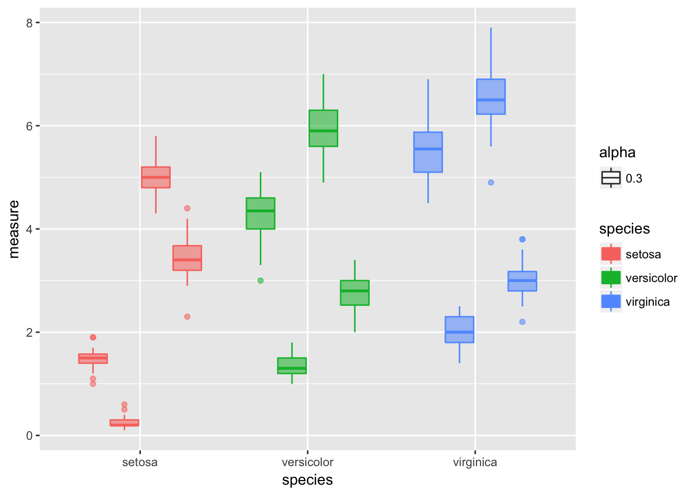
Test for normality of data and using the broom package
So I think this is premature but some people like to test the normality of the data but really you should be assessing the normality of the residuals. But here it goes…
# turn off scientific notaton
options(scipen = 999)
# to turn back on
#options(scipen = 0)
# Test for normality of each group and store in shapirowilktests
# This uses the broom package to get clean output of the test
iris_long.df %>% group_by(species, trait) %>% do(tidy(shapiro.test(.$measure)))## # A tibble: 12 x 5
## # Groups: species, trait [12]
## species trait statistic p.value method
## <chr> <chr> <dbl> <dbl> <fct>
## 1 setosa petal_length 0.955 0.0548 Shapiro-Wilk normality t…
## 2 setosa petal_width 0.800 0.000000866 Shapiro-Wilk normality t…
## 3 setosa sepal_length 0.977 0.456 Shapiro-Wilk normality t…
## 4 setosa sepal_width 0.972 0.272 Shapiro-Wilk normality t…
## 5 versicolor petal_length 0.966 0.158 Shapiro-Wilk normality t…
## 6 versicolor petal_width 0.948 0.0273 Shapiro-Wilk normality t…
## 7 versicolor sepal_length 0.978 0.465 Shapiro-Wilk normality t…
## 8 versicolor sepal_width 0.974 0.338 Shapiro-Wilk normality t…
## 9 virginica petal_length 0.962 0.110 Shapiro-Wilk normality t…
## 10 virginica petal_width 0.960 0.0870 Shapiro-Wilk normality t…
## 11 virginica sepal_length 0.971 0.258 Shapiro-Wilk normality t…
## 12 virginica sepal_width 0.967 0.181 Shapiro-Wilk normality t…#You can do this on all variables faster with if there was only one grouping
# tapply(iris_long.df$measure, iris_long.df$species, shapiro.test)Correlations Plots
This info is from:
http://stackoverflow.com/questions/29697009/correlation-matrix-plot-with-ggplot2
and
https://www.r-bloggers.com/plot-matrix-with-the-r-package-ggally/
and
http://ggobi.github.io/ggally/#canonical_correlation_analysis
ggpairs(iris.df[,1:4])## Warning: Removed 1 rows containing non-finite values (stat_density).## Warning in (function (data, mapping, alignPercent = 0.6, method =
## "pearson", : Removing 1 row that contained a missing value## Warning in (function (data, mapping, alignPercent = 0.6, method =
## "pearson", : Removing 1 row that contained a missing value## Warning in (function (data, mapping, alignPercent = 0.6, method =
## "pearson", : Removing 1 row that contained a missing value## Warning: Removed 1 rows containing missing values (geom_point).
## Warning: Removed 1 rows containing missing values (geom_point).
## Warning: Removed 1 rows containing missing values (geom_point).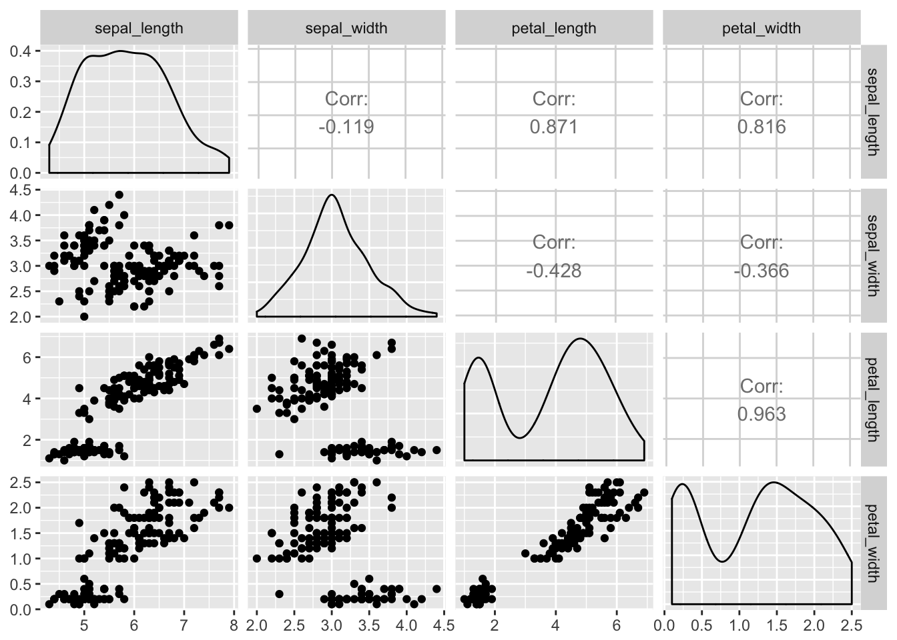
# if you only wanted to do this on a single species
# Correlation graphs of one species
setosa.df <- iris.df %>% #na.omit() %>%
filter(species=="setosa")
ggpairs(setosa.df[,1:4])## Warning: Removed 1 rows containing non-finite values (stat_density).## Warning in (function (data, mapping, alignPercent = 0.6, method =
## "pearson", : Removing 1 row that contained a missing value## Warning in (function (data, mapping, alignPercent = 0.6, method =
## "pearson", : Removing 1 row that contained a missing value## Warning in (function (data, mapping, alignPercent = 0.6, method =
## "pearson", : Removing 1 row that contained a missing value## Warning: Removed 1 rows containing missing values (geom_point).
## Warning: Removed 1 rows containing missing values (geom_point).
## Warning: Removed 1 rows containing missing values (geom_point).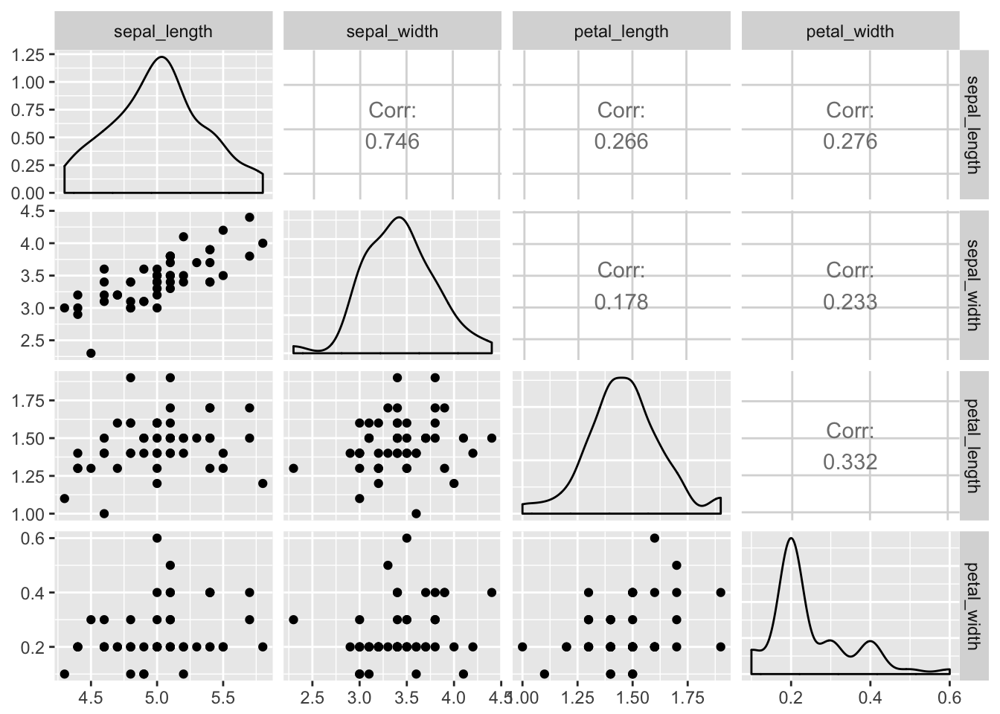
Look at the correlation matrix
# correlation matrix of the data with only the numeric data in a dataframe
# the old way - the same really
# cor(setosa.df[,1:4], method = "pearson") # , method = c("pearson", "kendall", "spearman")
# need to only have numeric varaibles
iris.df %>% select(-species) %>% cor() ## sepal_length sepal_width petal_length petal_width
## sepal_length 1 NA NA NA
## sepal_width NA 1.0000000 -0.4284401 -0.3661259
## petal_length NA -0.4284401 1.0000000 0.9628654
## petal_width NA -0.3661259 0.9628654 1.0000000Linear Regression
Linear regression models
# Fit our regression model
# regression formula and dataframte
sepal.model <- lm(data=setosa.df, sepal_length ~ sepal_width)
# Summarize and print the results
summary(sepal.model) # show regression coefficients table##
## Call:
## lm(formula = sepal_length ~ sepal_width, data = setosa.df)
##
## Residuals:
## Min 1Q Median 3Q Max
## -0.52287 -0.16338 0.01765 0.12842 0.44739
##
## Coefficients:
## Estimate Std. Error t value Pr(>|t|)
## (Intercept) 2.59363 0.31612 8.204 0.000000000126 ***
## sepal_width 0.70257 0.09144 7.683 0.000000000760 ***
## ---
## Signif. codes: 0 '***' 0.001 '**' 0.01 '*' 0.05 '.' 0.1 ' ' 1
##
## Residual standard error: 0.2394 on 47 degrees of freedom
## (1 observation deleted due to missingness)
## Multiple R-squared: 0.5567, Adjusted R-squared: 0.5473
## F-statistic: 59.03 on 1 and 47 DF, p-value: 0.0000000007599AOV table of regression
anova(sepal.model)## Analysis of Variance Table
##
## Response: sepal_length
## Df Sum Sq Mean Sq F value Pr(>F)
## sepal_width 1 3.3831 3.3831 59.029 0.0000000007599 ***
## Residuals 47 2.6937 0.0573
## ---
## Signif. codes: 0 '***' 0.001 '**' 0.01 '*' 0.05 '.' 0.1 ' ' 1# # # # # # # # # # # # # # # # # #
# TYPE II SUM OF SQUARES
#
#
# # # # # # # # # # # # # # # # # #
Anova(sepal.model, type="II")## Anova Table (Type II tests)
##
## Response: sepal_length
## Sum Sq Df F value Pr(>F)
## sepal_width 3.3831 1 59.029 0.0000000007599 ***
## Residuals 2.6937 47
## ---
## Signif. codes: 0 '***' 0.001 '**' 0.01 '*' 0.05 '.' 0.1 ' ' 1# # # # # # # # # # # # # # # # # #
# TYPE III SUM OF SQUARES
#
## # # # # # # # # # # # # # # # # #
Anova(sepal.model, type="III")## Anova Table (Type III tests)
##
## Response: sepal_length
## Sum Sq Df F value Pr(>F)
## (Intercept) 3.8579 1 67.313 0.0000000001264 ***
## sepal_width 3.3831 1 59.029 0.0000000007599 ***
## Residuals 2.6937 47
## ---
## Signif. codes: 0 '***' 0.001 '**' 0.01 '*' 0.05 '.' 0.1 ' ' 1# NOTE THERE IS NO DIFFERENCEPlot of the Regression
plot(data=setosa.df, sepal_length ~ sepal_width, main="Regression Plot")
abline(sepal.model, col="red")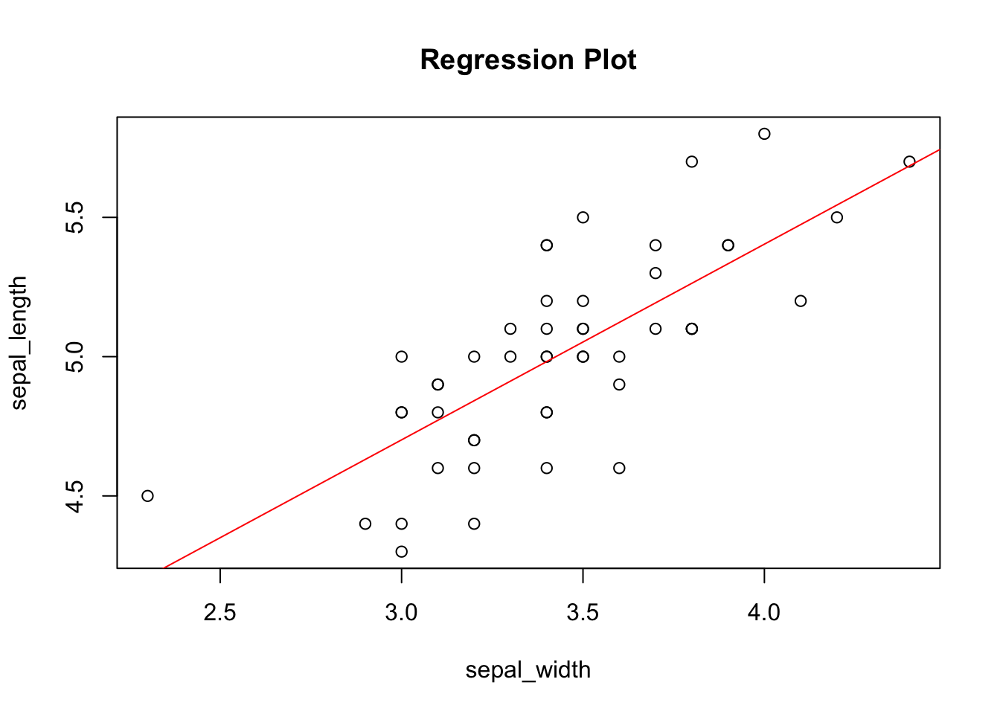
Regression plot with GGPLOT which is a bit nicer in my opinion
ggplot(setosa.df, aes(x = sepal_width, y = sepal_length)) +
geom_smooth(method = "lm") +
geom_point()## Warning: Removed 1 rows containing non-finite values (stat_smooth).## Warning: Removed 1 rows containing missing values (geom_point).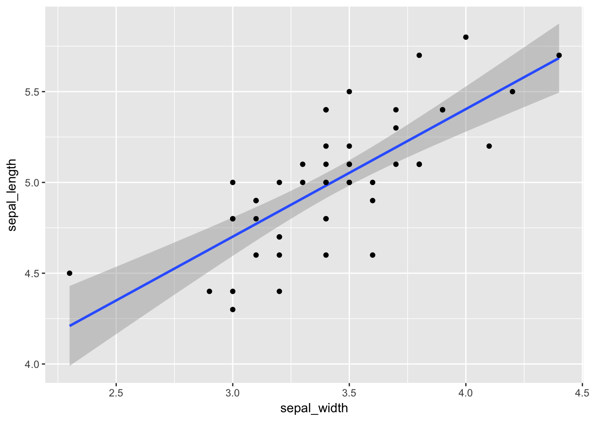
We can use this to get more information about the model fit
# Confidence intervals for the sepal model
confint(sepal.model)## 2.5 % 97.5 %
## (Intercept) 1.9576693 3.2295865
## sepal_width 0.5186055 0.8865279Linear Regresson Assumptions
Ordinary least squares regression relies on several assumptions
1. residuals are normally distributed and homoscedastic
2. errors are independent
3. relationships are linear
Investigate these assumptions visually by plotting your model:
Histogram of residuals
# histogram of residuals
hist(residuals(sepal.model))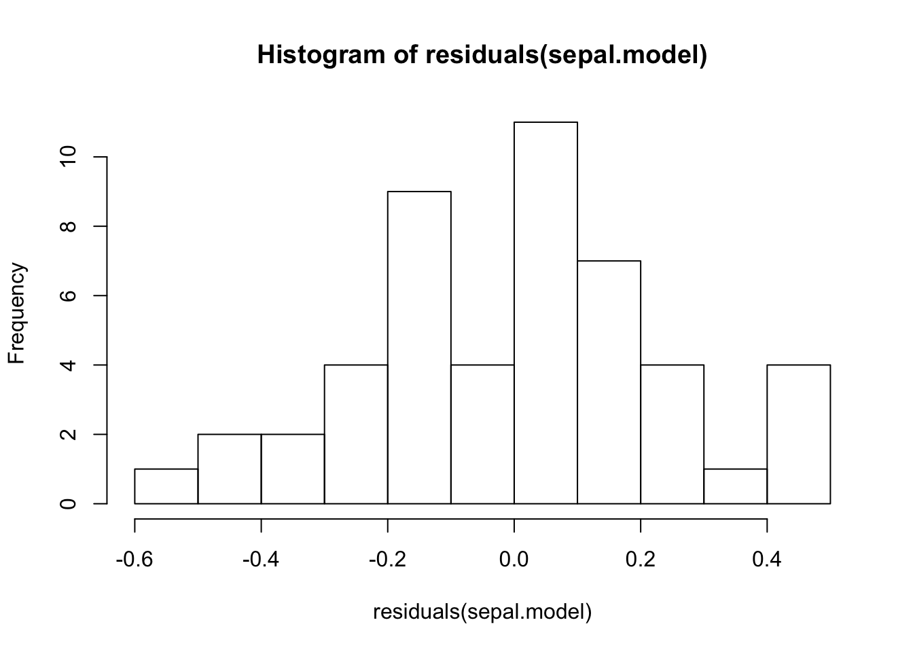
Diagnostic Plots
par(mar = c(4, 4, 2, 2), mfrow = c(1, 2))
plot(sepal.model, which = c(1, 2)) # "which" argument optional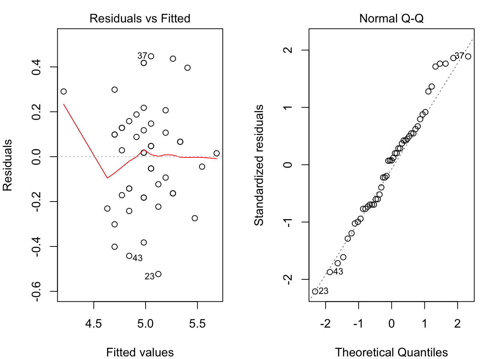
Non‐constant Error Variance or Homoscedasticity
# Evaluate homoscedasticity
# non-constant error variance test
ncvTest(sepal.model)## Non-constant Variance Score Test
## Variance formula: ~ fitted.values
## Chisquare = 0.1499036 Df = 1 p = 0.6986275Test for normality of residuals
to confirm the qqplot
#Test for normality of residuals
shapiro.test(sepal.model$res)##
## Shapiro-Wilk normality test
##
## data: sepal.model$res
## W = 0.98023, p-value = 0.5748Save residuals for further analyses
# # now to put the residuals next to the data and make sure that NAs are included
# Not sure why it has an error but it works.
setosa.df$residuals[!is.na(setosa.df$sepal_length)]<-residuals(lm(data=setosa.df, sepal_length ~ sepal_width, na.action=na.omit))## Warning: Unknown or uninitialised column: 'residuals'.head(setosa.df)## # A tibble: 6 x 6
## sepal_length sepal_width petal_length petal_width species residuals
## <dbl> <dbl> <dbl> <dbl> <chr> <dbl>
## 1 5.10 3.50 1.40 0.200 setosa 0.0474
## 2 NA 3.00 1.40 0.200 setosa NA
## 3 4.70 3.20 1.30 0.200 setosa -0.142
## 4 4.60 3.10 1.50 0.200 setosa -0.172
## 5 5.00 3.60 1.40 0.200 setosa -0.123
## 6 5.40 3.90 1.70 0.400 setosa 0.0664Now to add in the predicted values
you could also do this with a formula from the output of the model
# this produces the fitted values for the model
fitted(sepal.model)## 1 3 4 5 6 7 8 9
## 5.052611 4.841841 4.771585 5.122868 5.333638 4.982355 4.982355 4.631071
## 10 11 12 13 14 15 16 17
## 4.771585 5.193125 4.982355 4.701328 4.701328 5.403895 5.684921 5.333638
## 18 19 20 21 22 23 24 25
## 5.052611 5.263381 5.263381 4.982355 5.193125 5.122868 4.912098 4.982355
## 26 27 28 29 30 31 32 33
## 4.701328 4.982355 5.052611 4.982355 4.841841 4.771585 4.982355 5.474151
## 34 35 36 37 38 39 40 41
## 5.544408 4.771585 4.841841 5.052611 5.122868 4.701328 4.982355 5.052611
## 42 43 44 45 46 47 48 49
## 4.209531 4.841841 5.052611 5.263381 4.701328 5.263381 4.841841 5.193125
## 50
## 4.912098Store fitted values in dataframe
# now to see a plot of fitted and observed-----
setosa.df$fitted[!is.na(setosa.df$sepal_length)]<-fitted(lm(data=setosa.df, sepal_length ~ sepal_width, na.action=na.omit))## Warning: Unknown or uninitialised column: 'fitted'.head(setosa.df)## # A tibble: 6 x 7
## sepal_length sepal_width petal_length petal_width species residuals
## <dbl> <dbl> <dbl> <dbl> <chr> <dbl>
## 1 5.10 3.50 1.40 0.200 setosa 0.0474
## 2 NA 3.00 1.40 0.200 setosa NA
## 3 4.70 3.20 1.30 0.200 setosa -0.142
## 4 4.60 3.10 1.50 0.200 setosa -0.172
## 5 5.00 3.60 1.40 0.200 setosa -0.123
## 6 5.40 3.90 1.70 0.400 setosa 0.0664
## # ... with 1 more variable: fitted <dbl>ggplot(setosa.df) +
geom_point(aes(x = sepal_width, y = sepal_length), color="blue")+
geom_point(aes(x = sepal_width, y = fitted), color="red")+
geom_line(aes(x = sepal_width, y = fitted), color="red")## Warning: Removed 1 rows containing missing values (geom_point).## Warning: Removed 1 rows containing missing values (geom_point).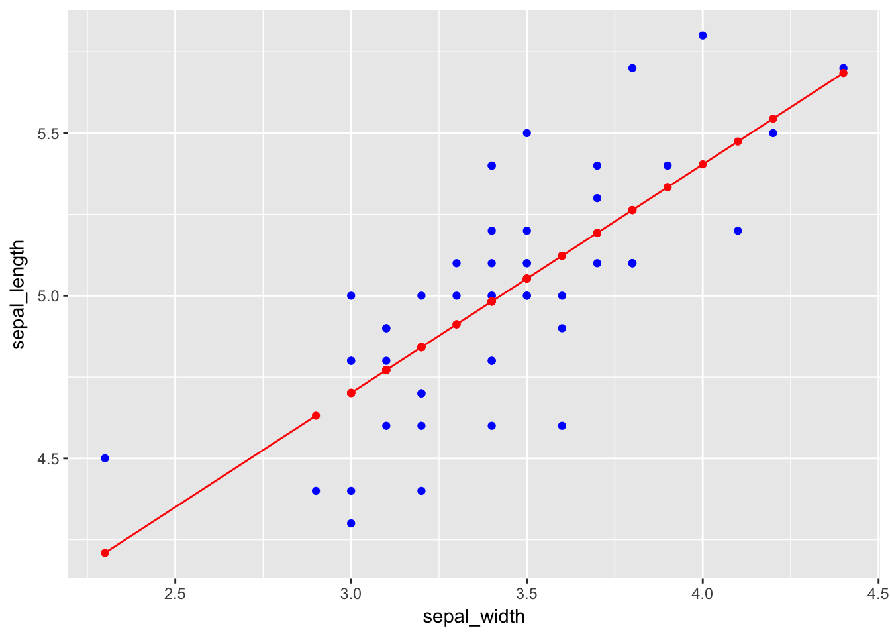
Other packages that do similiar things maybe better.
The gvlma package can do a lot of this automatically
#install.packages("gvlma")
# library(gvlma)
# Global test of model assumptions
gvmodel <- gvlma(sepal.model)
summary(gvmodel)##
## Call:
## lm(formula = sepal_length ~ sepal_width, data = setosa.df)
##
## Residuals:
## Min 1Q Median 3Q Max
## -0.52287 -0.16338 0.01765 0.12842 0.44739
##
## Coefficients:
## Estimate Std. Error t value Pr(>|t|)
## (Intercept) 2.59363 0.31612 8.204 0.000000000126 ***
## sepal_width 0.70257 0.09144 7.683 0.000000000760 ***
## ---
## Signif. codes: 0 '***' 0.001 '**' 0.01 '*' 0.05 '.' 0.1 ' ' 1
##
## Residual standard error: 0.2394 on 47 degrees of freedom
## (1 observation deleted due to missingness)
## Multiple R-squared: 0.5567, Adjusted R-squared: 0.5473
## F-statistic: 59.03 on 1 and 47 DF, p-value: 0.0000000007599
##
##
## ASSESSMENT OF THE LINEAR MODEL ASSUMPTIONS
## USING THE GLOBAL TEST ON 4 DEGREES-OF-FREEDOM:
## Level of Significance = 0.05
##
## Call:
## gvlma(x = sepal.model)
##
## Value p-value Decision
## Global Stat 0.89034439 0.9259 Assumptions acceptable.
## Skewness 0.00001977 0.9965 Assumptions acceptable.
## Kurtosis 0.46345677 0.4960 Assumptions acceptable.
## Link Function 0.42437391 0.5148 Assumptions acceptable.
## Heteroscedasticity 0.00249394 0.9602 Assumptions acceptable.Advanced
This is all secondary and more advanced items that you may or may not wish to deal with.
We can also look to see what is in the model that is stored as Values
class(sepal.model)## [1] "lm"names(sepal.model)## [1] "coefficients" "residuals" "effects" "rank"
## [5] "fitted.values" "assign" "qr" "df.residual"
## [9] "na.action" "xlevels" "call" "terms"
## [13] "model"methods(class = class(sepal.model))[1:9]## [1] "add1.lm" "alias.lm" "anova.lm" "Anova.lm" "augment.lm"
## [6] "avPlot.lm" "Boot.lm" "bootCase.lm" "boxCox.lm"The code above came from
http://tutorials.iq.harvard.edu/R/Rstatistics/Rstatistics.html
there are a lot of good examples of comparing models and a lot more about regression not included here.
Different code for a QQPlot for normality
qqPlot(sepal.model, main="QQ Plot") #qq plot for studentized resid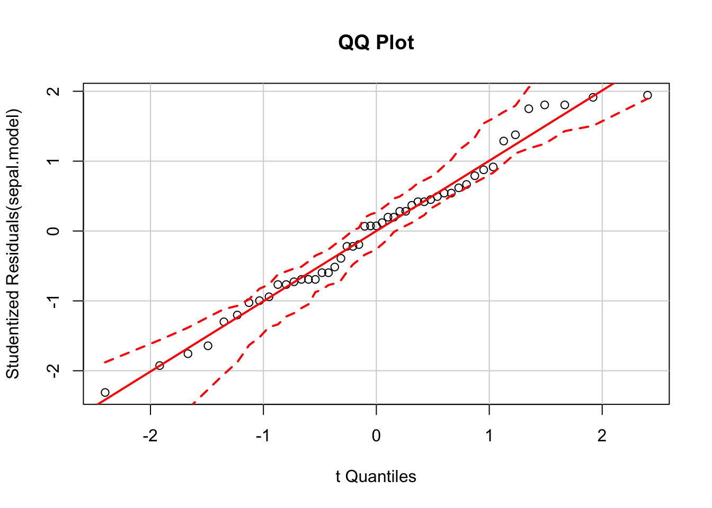
leverage plots
leveragePlots(sepal.model) # leverage plots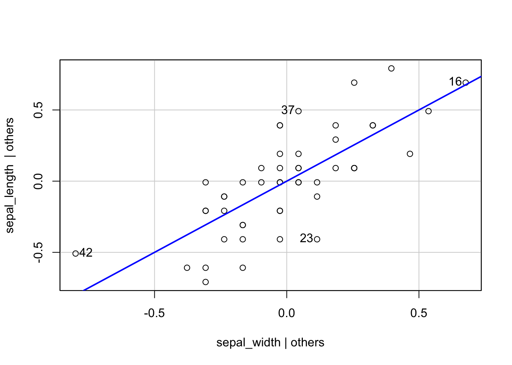
Assess the role of outliers
# Assessing Outliers
outlierTest(sepal.model) # Bonferonni p-value for most extreme obs##
## No Studentized residuals with Bonferonni p < 0.05
## Largest |rstudent|:
## rstudent unadjusted p-value Bonferonni p
## 23 -2.310958 0.02537 NAExamine the influence plot using Cook’s Distance
# Influence Plot
influencePlot(sepal.model, id.method="identify", main="Influence Plot", sub="Circle
size is proportial to Cook's Distance" )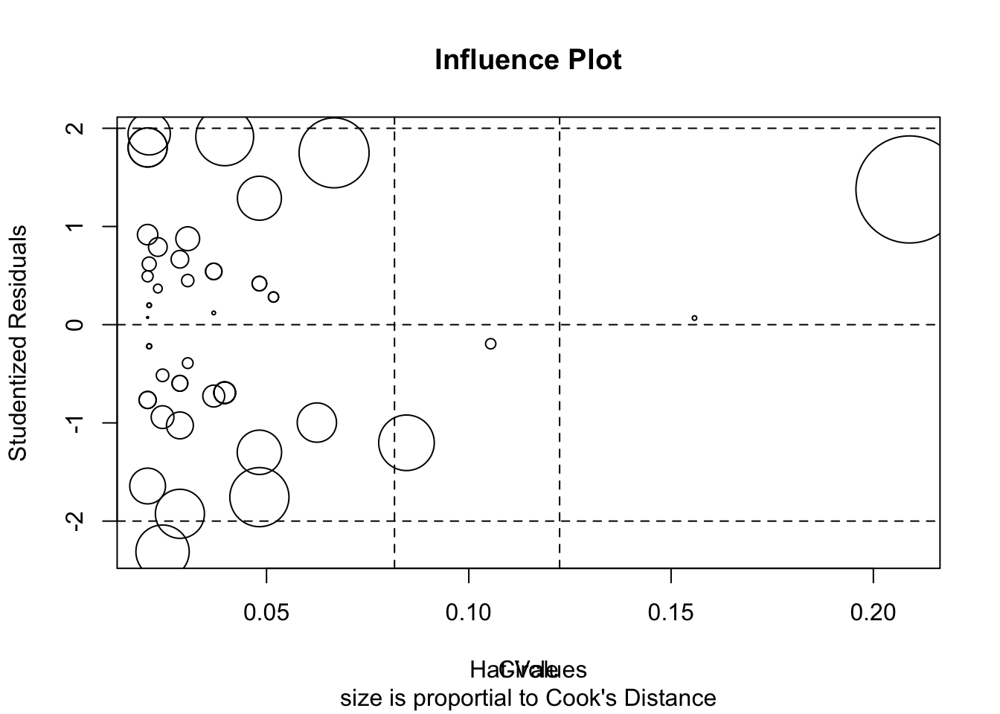
Plot studentized residuals vs. fitted values
# plot studentized residuals vs. fitted values
spreadLevelPlot(sepal.model)
##
## Suggested power transformation: 5.093463Non‐independence of Errors
# Test for Autocorrelated Errors
durbinWatsonTest(sepal.model)## lag Autocorrelation D-W Statistic p-value
## 1 -0.2762724 2.548843 0.066
## Alternative hypothesis: rho != 0STANDARDIZED REGRESSION - CONVERTED TO Z SCORES
# # Regression analyses, standardized
sepal_z.model <- lm(scale(setosa.df$sepal_length) ~ scale(setosa.df$sepal_width))
summary(sepal_z.model)##
## Call:
## lm(formula = scale(setosa.df$sepal_length) ~ scale(setosa.df$sepal_width))
##
## Residuals:
## Min 1Q Median 3Q Max
## -1.46953 -0.45919 0.04959 0.36091 1.25739
##
## Coefficients:
## Estimate Std. Error t value Pr(>|t|)
## (Intercept) -0.01725 0.09615 -0.179 0.858
## scale(setosa.df$sepal_width) 0.74849 0.09742 7.683 0.00000000076 ***
## ---
## Signif. codes: 0 '***' 0.001 '**' 0.01 '*' 0.05 '.' 0.1 ' ' 1
##
## Residual standard error: 0.6728 on 47 degrees of freedom
## (1 observation deleted due to missingness)
## Multiple R-squared: 0.5567, Adjusted R-squared: 0.5473
## F-statistic: 59.03 on 1 and 47 DF, p-value: 0.0000000007599# # The function fitted returns predicted scores whereas the function resid returns residuals
# # THIS IS HOW TO SAVE THE RESIDUALS INTO THE VARIABLE E FOR EROR
# ex$e <- resid(modelweight_lenght.z)Confidence intervals of the standardized regression
confint(sepal_z.model)## 2.5 % 97.5 %
## (Intercept) -0.2106668 0.1761723
## scale(setosa.df$sepal_width) 0.5525041 0.9444759